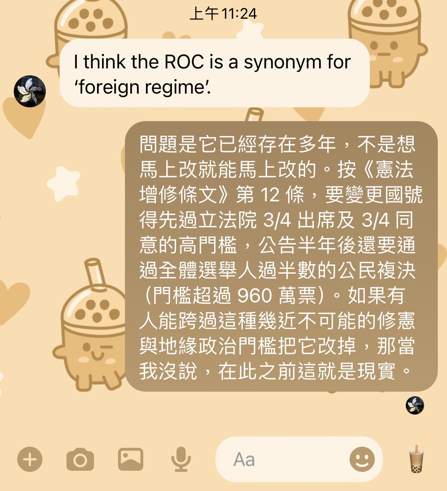
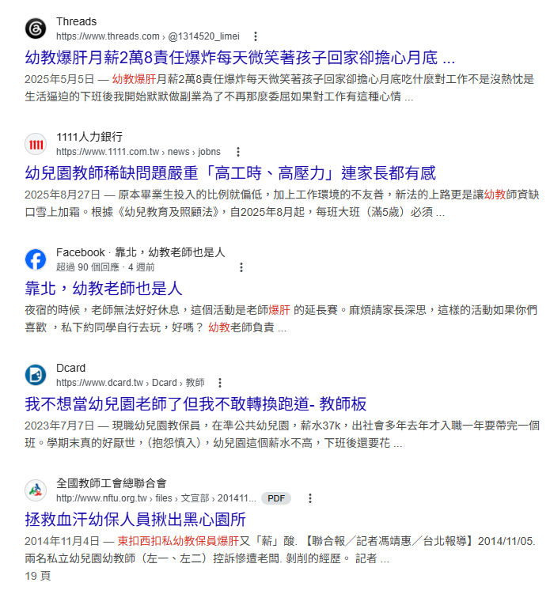
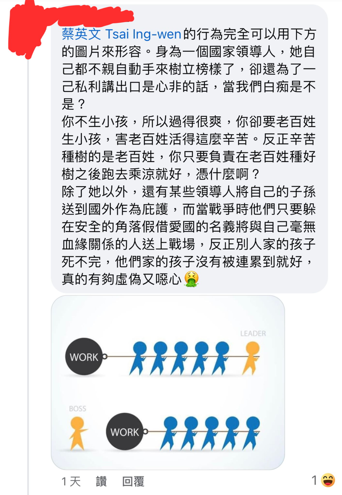
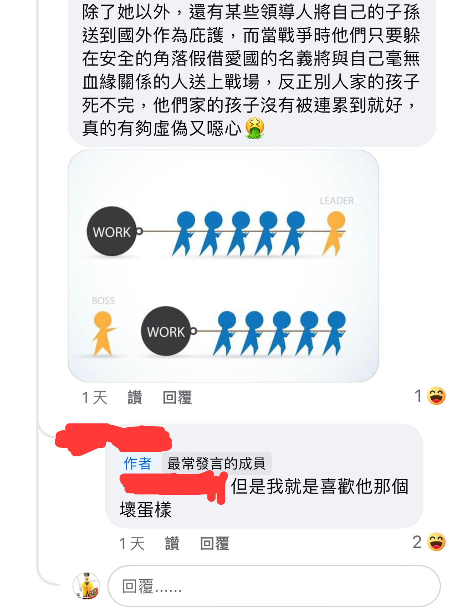

點擊語言選單以切換翻譯
本專案並非針對任何特定的宗教或群體，而是針對所有「缺乏物理實相支撐」與「邏輯不通」的信仰系統進行解構。
身為開發者，我們深知一套系統若底層邏輯混亂，無論介面（儀式）多麼華麗，最終都將導致運行錯誤。本專案的宗旨如下：
「本專案不提供心靈寄託，只提供實相數據。請保持理性，拒絕被任何未經校驗的迷信系統所誤導。」
小時候，長輩總喜歡用一套粗暴的因果論來管教我們：「不可以說謊、不能欺負人、不要做不符合社會風氣的事，否則死後會下地獄受苦。」這種恐嚇式的道德綁架，幾乎成了每個人童年的集體陰影。然而，當我們長大並開始用理性和邏輯審視這個世界時，就會發現這套流傳千年的「死後審判機制」，在現實與邏輯上根本漏洞百出。
許多動漫和電影（如《與神同行》、《鬼灯的冷徹》）都熱衷於描繪死後世界如何井然有序地根據生前善惡進行審判。但若打破國界與文化同溫層，將這套死後官僚體制拉到真實世界地圖上，神話系統的底層代碼立刻就會發生災難性的衝突：
台灣本土鄉土劇《戲說台灣》曾出現過堪稱天才級的黑色幽默情節：空中飄浮著神父與身負雙翼的西方天使靈體，地面負責處理本土的鬼魂的死後去處的城隍爺指著天空，一臉理所當然地對著眼前的日本亡者解釋道：「上面那是回美國的啦。」
這句台詞看似荒謬無厘頭，卻精準扯開了全世界宗教死後體系最大的遮羞布——死後世界根本沒有任何跨國司法協定與引渡條約：
更令人啼笑皆非的是，所謂的「引渡回美國」或「天庭執法」，在真實人類學歷史面前完全是不攻自破的謊言，其本質是跟著活人刀槍佔領地盤跑的「隨軍違章建築」：
這種跨文化衝突在影視娛樂中經常不自覺暴露出經典的 Bug：
這生動證明了一件事：所有超自然力量與審判法規，全都只在人造的特定文化封閉區域內才能「看起來有效」；一旦跨出邊界，這座虛構的違建大樓立刻原地崩塌。
拋開地理管轄權不談，即便假設地府只審判單一區域的信徒，其底層的「法理運作」與「數據算力」同樣荒唐至極：
宗教與地府最愛恐嚇信徒「舉頭三尺有神明」、「善惡起心動念皆被記錄在冊」。但若以現代法治國原則審視：
根據客觀人口統計，全球平均每天死亡約 16 萬至 17 萬人：
長輩從小恐嚇我們「殺人下地獄、做好事上天堂」，但只要翻開人類歷史與生理學事實，就會發現宗教所謂的「善惡」從來沒有客觀標準，而是一套充滿利益交換、神權特權與反生理學的精緻雙標：
在西方歷史上，中世紀慘絕人寰的宗教戰爭與十字軍東征皆由羅馬教廷主導，騎士團以神之名屠戮整座城市的異教平民與婦孺，卻能獲教宗頒發「全大赦」免除一切罪孽直接進天堂。而在現代社會新聞中，全球天主教會頻繁爆發神父長期性侵小男童、修女與女信徒的結構性醜聞；面對這類滔天惡行，教廷高層第一時間的反應從來不是展示神威天譴，而是透過跨教區秘密調動、簽訂保密協議壓制受害者。如果上帝真會因性侵與作惡降下硫磺火湖，為何最接近神職權力核心的建制體系，反而是包庇犯罪的共犯結構？
轉看東方民間信仰與漢傳佛教更顯精神分裂：三國名將關羽一生在冷兵器戰場上斬將殺敵無數、刀下亡魂難以計數。若按照傳統因果報應標準，這種手染無數鮮血的職業軍事屠夫理應在枉死城永受折磨；然而，各方勢力為了自身利益，竟對其展開了一場不可思議的跨界「神格併購」：
這殘酷地證實：一個人在死後到底是下地獄受罰還是被捧上神壇受香火，根本與客觀善惡無關，純粹取決於世俗統治階級與宗教商業機構，需不需要拿你的符號來維護統治或收割信徒的香火錢。
接著審計亞伯拉罕一神教所描繪的「完美天堂」。基督教神學宣稱天堂抹去了一切眼淚與邪惡，那裡沒有痛苦、沒有罪惡，人人享有永恆的福樂。然而從現代神經生物學來看，這套設定在底層生理邏輯上根本無法成立：
人類的大腦神經系統，唯有透過「痛苦的匱乏」與「解除痛苦的落差」，才能分泌多巴胺與內啡肽來感知幸福。
口渴至極時喝下的一杯水是瓊漿玉液，但如果讓你浸泡在糖水裡一萬年，水只會變成酷刑。就像全球銷量數億套的經典神作《俠盜獵車手》（Grand Theft Auto, GTA），該遊戲的核心機制就是讓玩家在虛擬世界中開車狂飆、痛扁路人、槍擊 NPC 甚至對抗警察體制，人類透過在安全邊界內釋放壓抑的「破壞本能（Destrudo）」而獲得巨大的多巴胺快感。而在一個「毫無邪惡念頭、毫無任何阻力、連一絲發洩空間都沒有」的天堂，人類所有的神經受體將在極短時間內徹底脫敏與適應，那根本不是幸福，而是在生理上等同於永恆的生化腦死與感覺剝奪（Sensory Deprivation）。
🎬 認知審計：虛擬代碼與實體殺戮的概念偷換（雙語實錄）：
更可怕的是在天堂的日常生活。《聖經·啟示錄》白紙黑字寫明，天上的千萬天使與二十四位長老，唯一的任務就是伏俯在寶座前，晝夜不停地向造物主高呼：「聖哉！聖哉！聖哉！主神是昔在、今在、以後永在的全能者！」
你可以做一個極其簡單的心理學思想實驗：現在就請你站在耶穌的畫像前，高舉雙手、聲嘶力竭地喊出：「主啊，我們崇拜你！主啊，我們愛你！」
不要說喊一輩子，你只要強迫自己對著牆壁連續不斷喊上一個小時，你的下顎關節就會劇痛，你的大腦前額葉就會被強烈的虛無與荒謬感逼到崩潰邊緣。而神學承諾的天堂，竟然是強迫你把這種毫無自主意識、沒有週末休息、沒有娛樂休閒、毫無任何個人意志的「拍馬屁複讀機生活」持續數百萬年、數億年甚至永恆！在現代反烏托邦文學的審視下，這種由宇宙級自戀造物主所建構的極權精神集中營，其反人類與殘酷恐怖的程度，何嘗不比地獄的皮肉刑罰更令人不寒而慄？你確定你真的還想上這種「天堂」嗎？
4. 🔬 哈佛醫學審計：每月射精頻率與攝護腺癌相對風險（RR）跑分
哈佛大學公共衛生學院與權威醫學期刊《歐洲泌尿學》（European Urology）追蹤超過 31,925 名成年男性長達 18 年的旗艦流行病學研究明確證實：成年男性每月射精達 21 次以上者，相較於每月僅 4 至 7 次的低頻禁慾組，罹患攝護腺癌的風險顯著降低約 20% 至 31%。透過定期排空前列腺液，能加速前列腺上皮細胞代謝，有效防止微觀致癌晶體與發炎分泌物長期沉積。
數據來源：Rider JR, Wilson KM, Sinnott JA, et al. Ejaculation Frequency and Risk of Prostate Cancer: Updated Results with an Additional Decade of Follow-up. European Urology.
荒謬的是，那些連細胞生物學都一無所知的古代先知與神職階級，卻硬生生編造出「婚前禁慾、自慰下地獄」的教條。未婚個體若嚴格遵從教規徹底壓抑，在生理上反而是強迫前列腺長期處於高壓充血與代謝廢物沉積狀態，等於是拿自己真實肉體的病變與致癌風險，去兌換一張虛構的天堂門票。在做好安全防護與知情同意的前提下，自慰與多巴胺釋放本就是碳基生物維持身心健康的天然調節機制。結婚與否純屬人類社會演化出的集體契約，在客觀人體生化機制面前毫無神聖特權。在歐美地區甚至不乏在雙方同意下進行換妻活動的群體。當全身包裹的傳統女性指責穿比基尼的女性會下地獄時，對方正享受著大膽展露身材帶來的多巴胺快樂並回嗆：「你已經在地獄裡了！」
▲ 文化雙標圖解：身穿保守阿巴雅（Abaya）長袍的女性以神權教條指責海灘上穿著比基尼的女性「死後會下地獄」，對方則在享受陽光與多巴胺的同時犀利回擊「妳現在就已經身在地獄了」，生動呈現道德枷鎖與身體自主的荒謬落差。
🎬 影音批判與配樂說明：
🎬 田野實證：菜市場傳教騷擾與《英雄》鋼琴反諷：
5. 🚼 反出生主義審計：生育背後的自私與隱私剝削
這種集體想像的雙標，在「生育觀念」上更展現出極致的撕裂。傳統體制和長輩常指責不生小孩的人自私、沒貢獻勞動力；但從反出生主義的角度來看，在未經個體同意下，強行將一個無辜的意識帶入充滿升學內卷、霸凌風險且司法保護失能的現實修羅場，這本質上才是一場不道德的侵略行為。
更虛偽的是現代社群媒體上的「母愛流量密碼」。許多父母宣稱生育是為了讓人生完整，卻在孩子出生後立刻為其建立社交帳號，毫無節制地公開孩子的成長隱私以滿足虛榮心。甚至有人生出有缺陷的小孩後，成立粉專公開販售孩子的苦難來博取社會同情，任由盲目的粉絲在底下留言「媽媽好偉大」來收割道德紅利。這種將孩子的痛苦轉化為自身光環的自私行為，在理性審計者眼中，簡直罪大惡極。這再度恰恰說明，道不道德純粹是極其主觀的東西，根本毫無標準答案。
▲ 社群實證解讀（苦難消費與集體自我感動）：截圖展示了家長將患有顱顏畸形的孩子日常生活高調放上社群網路，標榜「超級美麗的女孩」，吸引大量外人廉價留言「好偉大、好有愛」以洗刷道德存在感。反出生主義群組一針見血地指出：動動手指讚美的一方完全不需承擔任何代價，但孩子在真實世界中卻要用一生的時間去硬扛歧視目光、洗手間外的嘲弄與殘酷的霸凌現實。這種「以愛為名將孩子的身體缺陷當作公關貨幣」的行為，本質上是加害者對受害者的二度剝削。
▲ 法律維度審計（曬娃 Sharenting 的法律代價）：歐美多國司法體系已開始正視父母隨意公開未成年子女隱私的侵權本質。奧地利少女因父母擅自上傳其童年隱私照片憤而提告，法國法律更明定未經子女同意曬照最高可處重罰。這在法律層面粉碎了「孩子是父母附屬品」的傳統迷思，證明未經授權的隱私暴露，無論包裝得多麼溫情，皆構成實質的權利侵犯。
6. 🚩 意識形態符號審計：納粹禁忌、認同狂熱與「道德標準」的群體幻覺
文化相對主義與群體雙標的另一個極致體現，在於「符號的神聖化、禁忌化與道德脫敏」。在當代文明社會中，抵制納粹卐字旗（Hakenkreuz）已成為全球壓倒性的集體共識。任何人公開抨擊納粹，既不需要承擔肉身風險，也毋須付出思維代價，便能坐享大眾給予的「絕對道德正確」；但這種對歷史公認符號的零風險審判，往往讓人誤以為世間存在著一套永恆客觀的道德真理。
極權狂熱最核心的心智捷徑，就是將客觀符號直接降維為「絕對邪惡」，藉此解除個體作惡時的道德愧疚感——當年納粹將特定族群降維為「社會寄生蟲」來合理化清洗；而在特定政治狂熱群體的認知系統中，語言分類名詞亦被賦予了宛如宗教原罪般的政治禁忌。
在語言學與客觀地理歷史上，「閩南語」純粹是一個行之有年的方言學分類名詞，指涉發源於福建閩南地區、隨移墾傳播至台灣與東南亞的漢藏語系分支。然而，在特定同溫層的狂熱審判下，「閩南語」三個字卻被單方面定性為不可饒恕的殖民原罪代碼，甚至強制要求所有人必須無條件改稱「台語」進行政治正確的正名：
▲ 同溫層聖戰與現實脫節實錄（一）：真實對話截圖生動展現了符號崇拜的非理性程度。一方在私訊中激動表示：「正名台語謝謝、請你以後不要提到閩南語、我聽到別人叫我的母語閩南語我會在心裡氣，比別人罵我三字經還不爽」。另一方則冷靜指出，在客觀教學與常理上「閩南語」與「台語」在語義溝通上並無實質差別，國小鄉土語言教育亦長期客觀使用此詞彙。這種因三個字的客觀名詞而產生超越人身攻擊（三字經）的精神受創感，正是同溫層狂熱將世俗語言符號當作宗教神聖圖騰來崇拜、進而與廣泛公共空間全面脫節的典型認知 Glitch。
同樣的符號獵巫不僅限於語言名稱，更延伸到政權合憲性與國家符號的教條化審判。許多狂熱份子沉浸在抽象的去殖民神話中，機械式地將「中華民國（ROC）」等同於絕對原罪的「外來政權」；然而在客觀現代憲政體系中，實體法律運作與修憲門檻從不隨個人的抽象激情起舞：

▲ 同溫層聖戰與現實脫節實錄（二）：一方試圖以一句 「I think the ROC is a synonym for 'foreign regime'」 進行宏大符號的教條灌輸；另一方則以實體法理進行冷靜降維——直指依據《憲法增修條文》第 12 條，變更國號需跨越立法院 3/4 出席及 3/4 決議同意的高門檻，公告半年後還須通過逾 960 萬票的公民複決死門。這清晰揭示了狂熱份子往往活在口號自嗨的符號牢籠中，完全無視支撐現實社會運作的剛性法理與客觀地緣政治結構。
同樣的現象在面對「中國人」這種認同標籤時更演變成殘酷的人倫悲劇。在極端封閉同溫層中，這些符號被降維綁定為「極權、侵害人權」的絕對邪惡，進而誘發嚴重的道德去抑制（Moral Disengagement）——曾有狂熱份子因年逾古稀的老父自認是「中國人」，便怒火中燒痛毆父親，甚至拿手機強行錄影上傳至社群網絡發動公審。在同溫層狂熱分子眼中，這被包裝為「大義滅親、拔除毒瘤」的崇高壯舉；但在普通公民、中間選民與反對陣營看來，這純粹是政治仇恨撕裂家庭、泯滅基本倫理的人倫病態。
這殘酷地揭露了一個真相：所謂的「道德」，從來沒有客觀標準答案，它往往只是特定時空下「是否符合該群體強勢意志」的集體共識。
正如同在中世紀黑死病橫行時，若有人跳過徹夜祈禱與懺悔儀式，嘗試以隔離檢疫、煮沸消毒或解剖病理等科學手段救人，在當時的神權框架下會被判定為「大逆不道、褻瀆天主」的邪惡異端；然而在現代醫學看來，當時那套被奉為至善的祈禱才是致命的盲信，而被視為不道德的科學探索才是拯救性命的唯一正解。如果道德只能隨著群眾狂熱的風向起舞，那麼它與昔日愚昧的宗教裁判所並無本質不同。
道德與禁忌從不是放諸四海皆準的客觀物理常數，它往往只是一小撮人在封閉同溫層裡自我催眠、用以劃分敵我並發動審判的脆弱想像。
7. ⚖️ 各文化地獄天條互相打臉：對方的「至善」恰恰是自己的「死罪」
道德雙標最滑稽的終極體現，在於不同文化對「下地獄」的法規標準根本完全互斥、甚至在底層邏輯上互相判定對方為重刑犯：
這直接導出了一場荒唐絕倫的宇宙司法精神分裂劇：一位一輩子熱心公益、孝順父母，每天早晚虔誠拿香拜媽祖的台灣阿公，在西方上帝面前是不可饒恕的異端罪人；而一位虔誠受洗、嚴守摩西十誡，回鄉憤而將家中神主牌位全數砸爛燒毀的歐洲修士，被押到十殿閻羅面前，卻是忤逆祖宗、罪無可赦的不孝之徒。
如果宇宙中真有一座超越時空的至高法庭，祂到底該採納哪一套「地方土特產法規」來定罪？照這個互斥邏輯，全人類無論怎麼活、遵守哪家戒律，在隔壁棚神明的眼中全都罪該萬死、注定全員下地獄。這徹底撕開了所有死後審判的本質——它不過是各個封閉文化拿來進行思想恐嚇與道德規訓的人造產物罷了。
長輩總說從事詐騙會下十八層地獄，但放眼望去，整個現代人類社會本質上就是一個極其複雜的詐騙與包裝系統，差別只在於「有沒有違法」罷了：
🚨 社會系統性 Glitch 觀測：人性不可試探
最近出現國小女老師在下班後兼職當詐騙集團車手的新聞。一個本該教書育人、當孩子範本的教育者，卻選擇成為禍害社會的敗類。這深刻說明了：外在的人品往往只是包裝出來的介面（Interface），但人性是絕對經不起試探的底層代碼。只要籌碼足夠、誘惑到位，人人都可能觸發作惡的邏輯。
這背後更投射出政府體制、司法無能以及就業市場薪資不公的連帶潰敗。基層教育人員每天為了照顧和應付那些屁孩而極度傷神，薪水卻微薄得可憐；相反地，投入詐騙卻能快速累積財富，且在現行法律體制下總是被輕判。在這種扭曲的系統反向激勵下，底層邏輯自然會導向更划算的錯誤路徑。甚至近年頻傳的虐童案，本質上也是這種勞動高壓、低度回報與體制失能相互擠壓下的結構性悲劇。

🛠️ 架構安全與合規性審計（Architecture & Compliance Log）：
<video> 本機加載，以確保本思想專案之系統穩定度與獨立性。🏛️ 政治結構審計：世俗神權的道德包裝與成本轉嫁
※ 系統架構聲明：此處並非參與當代世俗黨派的口水政爭，而是將政治體制視為「另一種形態的世俗神權系統」——兩者本質相同，皆熱衷於編造虛幻的道德教條與愛國神話，藉此掩蓋底層資源分配不均與權力不對稱的物理實相。
這種集體詐騙與雙標，在國家政治機器的運作中展現得尤為露骨：
🎬 影音批判與原創鋼琴配樂說明：
🎬 影音批判與原創弦樂配樂說明：


▲ 社群實證解讀（無生殖主義觀點）：截圖揭示了底層清醒者對生育宣傳的精準解構——「領導人自己不生過得極其瀟灑，卻催促底層老百姓當生殖機器以提供韭菜與社會運作紅利」。評論區更一針見血戳穿權力階級的殘酷雙標：老百姓負責辛苦種樹，統治階層負責乘涼；一旦面臨戰爭危機，平民子弟被送上火線充當砲灰，權貴家族卻早已在海外構築安全退路。
▲ 政治階級後路與雙標實證：社群截圖詳列了政治人物高舉國族大義的背後，家族成員與子女卻普遍持有美籍護照、綠卡或海外資產的客觀清單。這種「嘴上教化老百姓抗爭或認同、肉身後代卻已在安全避風港著陸」的制度性背離，揭穿了意識形態動員的虛偽性——底層人民在互貼標籤、盲目出征中承擔戰爭與生存風險，而發號施令的統治精英卻早已買好了人生的境外退路。
🎬 影音批判解讀（執政精英的風險規避）：
批判執政黨最高領導者高喊抗敵大義，自身長子卻長期留美就業生子、手握海外安全退路；與此同時，國家機器卻修法延長兵役、動員基層年輕人備戰。這種「別人的孩子上火線充當防衛消耗品，權力者的直系血親在太平洋彼岸安居樂業」的強烈反差，是權力階層風險轉嫁的典型體現。
▲ 現代戰場與動員架構審計：外嵌影片從客觀物理角度撕開了政治宣傳的浪漫泡泡。現代戰爭是 FPV 自殺無人機、重砲覆蓋與絞肉機式的血腥消耗，毫無影視作品中的英雄主義；而動員體制的底層真相更殘酷地揭示了——當戰事爆發時，第一時間被推上前線承擔血肉橫飛代價的，永遠是既無資本、也無特權的底層青年。當代年輕人的「人間清醒」，正是看穿了這場由台前政客導演、卻由無辜肉身埋單的世俗祭旗狂歡。
換句話說，如果「說謊、雙標與偽善」就必須墮入無間地獄，那麼現代文明制度早已在不知不覺中，構築了一套規模最宏大、運轉最縝密的世俗地獄體系。
那麼，死後真的一無所有嗎？倒也未必。雖然歷史上的重大慘案（如南京大屠殺、猶太人遭屠殺）或現實中的悲劇（如新北國中割喉案、朱令鉈中毒事件），受害者死後都沒有顯靈找兇手報仇，這在物理層面證明了即使有鬼魂存在，祂們也無法干預物質世界的物理法則，因果報應往往只是活人的心理安慰。
然而，那些少數記得前世記憶、或是托夢破案的真實案例，卻又暗示著死亡或許不是終點。現代科學（如 Penrose 與 Hameroff 提出的 Orch-OR 理論）指出，意識並非由大腦本身產生，而是源於神經元內部的微管細胞（Microtubules）中的量子訊息。當心跳停止、身體機能死亡時，微管破裂，這些攜帶記憶與體驗的量子資訊並未消失，職司意識的數據只是散佈到宇宙之中。
可以肯定的是：死後根本沒有所謂的官僚審判機制。
綜上所述，所謂的「道德」與政治立場、宗教禁忌一樣，本質上都是因時因地而異的集體想像，根本沒有標準答案。長輩口中用來恐嚇管教的「下地獄說」，在邏輯與行政層面上完全是一個無法運行的偽命題；而神職階級所許諾的「永恆天堂」，在神經生物學與心理學面前，更是一場反人類的生化腦死與極權複讀機苦役。
如果手染無數鮮血的戰將能被廟堂與佛寺爭相招安封神，連虛擬遊戲的像素代碼都能被宗教說教者判定為下地獄的重罪，而享有特權的神職人員卻能跨國規避性侵制裁；如果神明的管轄權永遠只能跟著人間軍隊的刀槍與移民地盤跑，連死後引渡都要上演「天使在美洲被原住民祖靈阻攔、城隍爺在台灣被當無照外來種」的跨國荒謬劇；如果各家地獄天條彼此自相矛盾、把別人的行善盡孝當成直墜火湖的死罪；如果未經同意將意識拉入卷王修羅場、剝削兒少隱私收割道德紅利算偉大；如果為了一句方言稱謂與認同標籤就能拋棄人倫痛毆至親、整天活在口號改國號的符號牢籠中自嗨卻無視剛性憲政門檻，同時對現實中統治階層轉嫁生育成本與戰爭風險視而不見——那我們早就身處在人類一手打造、運轉最縝密的世俗地獄體系中了。
我們完全沒必要被數千年前古代樣本在資訊匱乏下編寫的「恐嚇補丁」鎖死大腦的運算資源。如果死後有靈，它不過是一段回歸宇宙、重新編碼的自由量子數據；如果死亡是徹底終結，那它更是免於任何官僚審判與永恆苦役的絕對平靜。而在呼吸停止之前，我們唯一能做的，就是徹底看清這場跨越神權、政權與民俗的集體詐騙規則，在這個荒謬的物質世界中，清醒且不留遺憾地為自己活過一回。
📤 喜歡這篇思維解構？歡迎分享到社群平台：